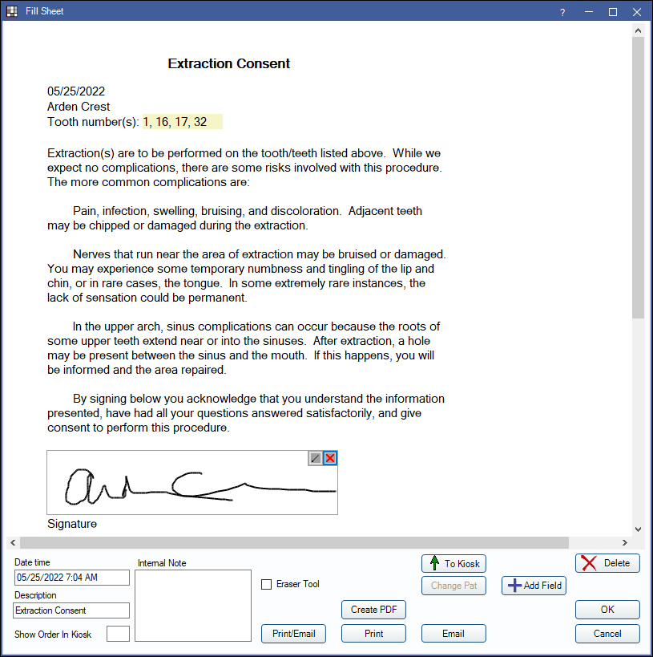

Consent Form
Quickly create Consent forms from the Chart Module to print or have patients sign digitally.
In the Chart Module toolbar, click Consent.
Alternatively, in the Treatment Plan Module click Consent.
- To customize layout or content, see Consent Form Layout.
- View patient Consent forms in the Chart Module, Progress Notes, and Account Module.
- Consent forms can be sent to the eClipboard when Mobile Layout is enabled.
If only one Consent form exists, it will generate. If more than one Consent form exists, click the dropdown, then select the correct form. Above is the internal extraction Consent form.
Fill out the form. Pale yellow areas (e.g., Tooth numbers) indicate input areas. Electronic Signatures are supported.
See Fill Sheet for additional information on the buttons and fields below the sheet.
If filling a Consent with a ProcsWithFee or ProcsNoFee grid, users are prompted to select procedures. If generating a Consent from the Treatment Plan Module, users must highlight procedures from the Treatment Plan first.
Signing Consent Forms
There are multiple ways a patient can sign a Consent form:
- Print the Consent for the patient to sign, then scan the Consent form into the Imaging Module.
- Have the patient sign electronically in the office via eClipboard. See eClipboard: Workflow.
- With eClipboard, the Consent form can be signed when seated in the operatory or prior to the appointment when checking in.
- Have the patient sign electronically in the office via the kiosk. See Workflow in Kiosk Manager.